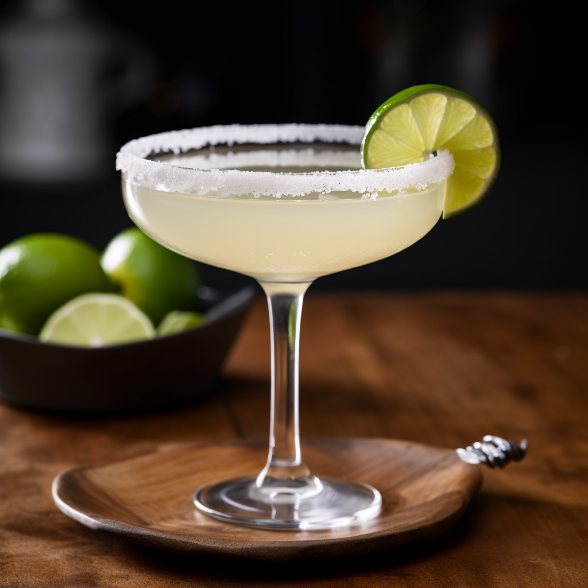
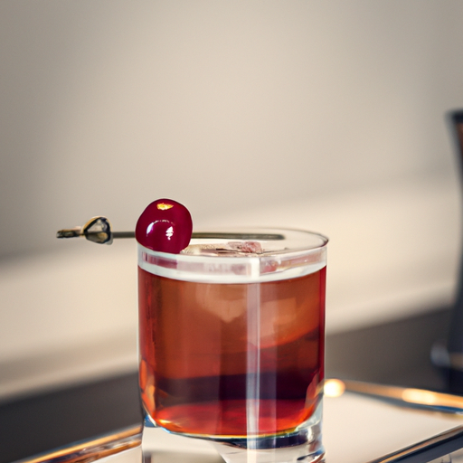

VODKA & SODA

- Původem z Ruska, vodka se sodou se podává v různých poměrech, nejčastěji 2:1.
- Vodka může být použita jakákoliv, moje osobní preference je Amundsen.
- Může se podávat s limetkou, citrónem nebo i okurkou
MARGARITA
- 
- Původem nejspíše z Mexika.
- Pro přípravu je třeba 50ml tequily, za mě Titos, 25ml limetkové šťávy a 15ml triple sec, například Cointreau.
- Pro extra šmrnc se okraj sklenice namočí do vody a poté do soli.
MANHATTEN
- 
- Původem podle názvu z Manhattenu. Je považován za klasický "kloboukový drink"
- Pro přípravu je třeba 60ml Rye whiskey, 30ml sladkého vermutu a angustorový hořký kapky.
- Přidává se třešeň a může se vymáčknout šlupka od pomeranče.